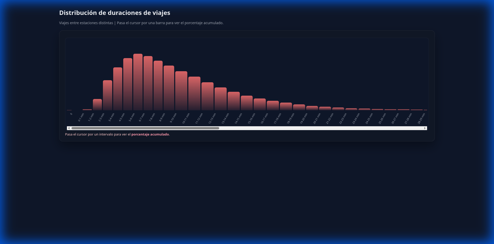
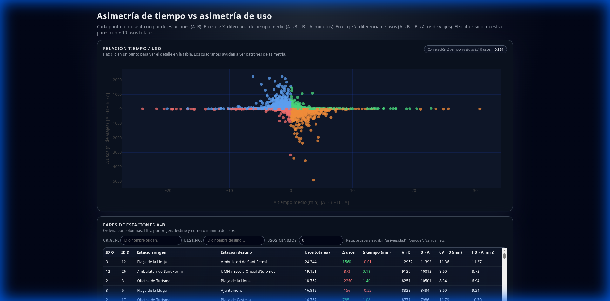
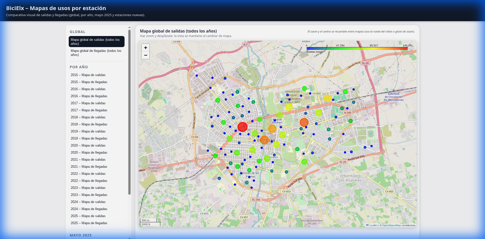
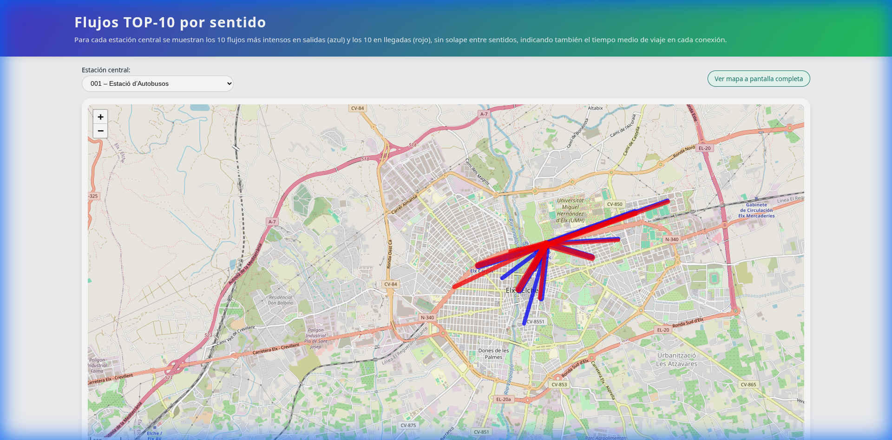
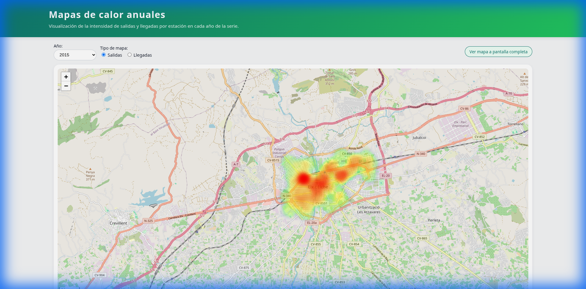
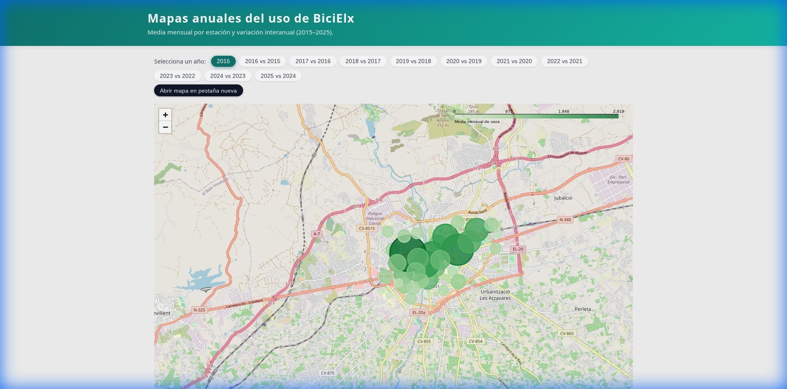
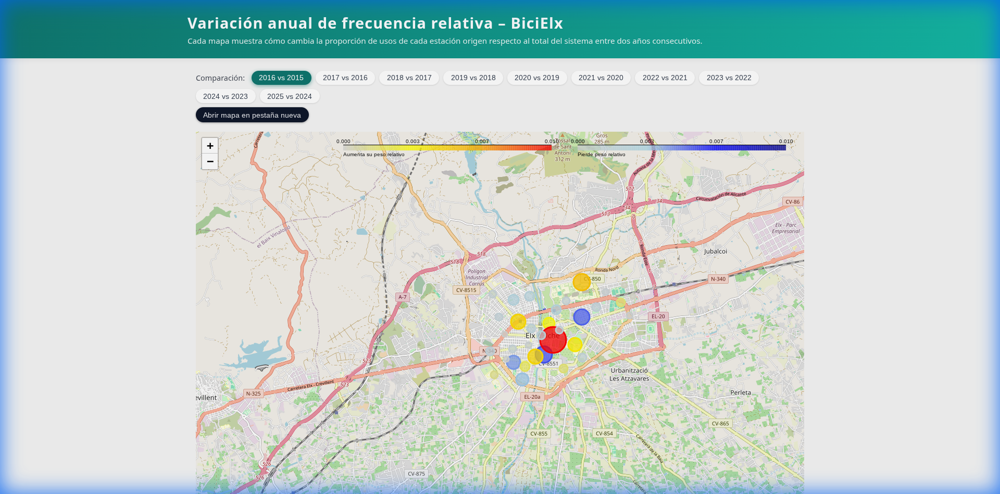
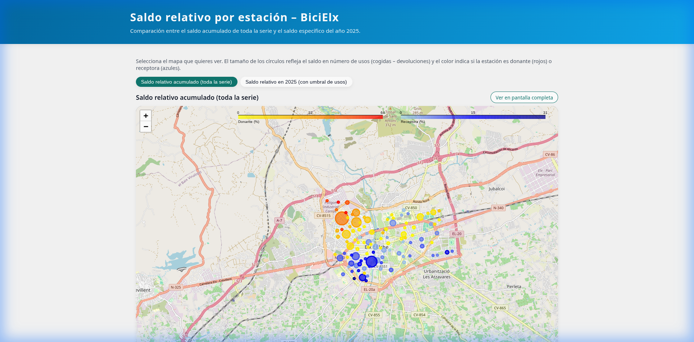
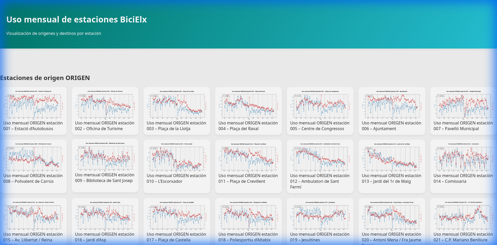
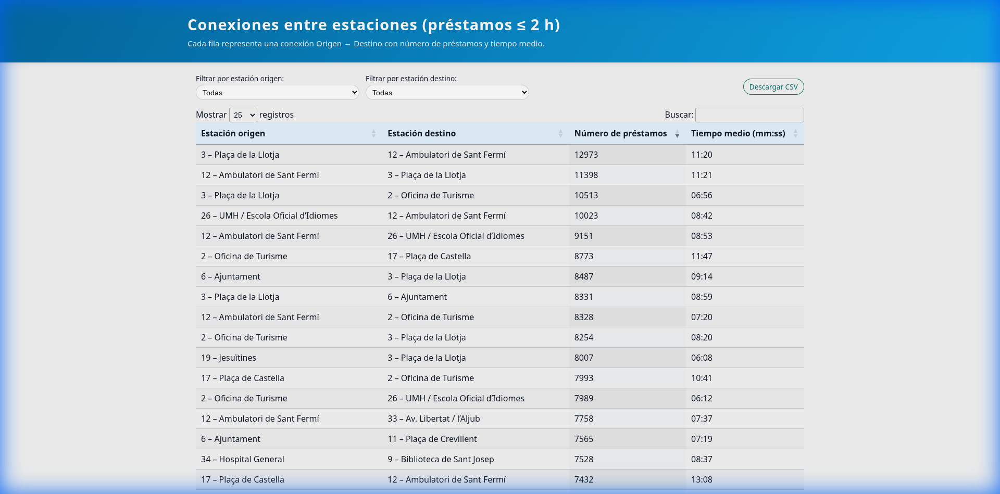

📈 Evolución Temporal


🕒 Patrones de Uso y Hábitos

Uso por Meses y Días
Promedios históricos de utilización según la temporalidad.

Uso por Día de la Semana
Comparativa entre días laborables y fines de semana.

Frecuencia Horaria (Destino)
Distribución de llegadas por franja horaria y estación.

Frecuencia Horaria (Origen)
Distribución de salidas por franja horaria y estación.

Promedio Mensual por Estación
Uso medio detallado para cada punto de préstamo mes a mes.
Evolución Horaria (Destino)
Cómo ha cambiado la distribución de llegadas a lo largo de los años.
Evolución Horaria (Origen)
Cómo ha cambiado la distribución de salidas a lo largo de los años.

Duración de los Viajes
Histograma con la distribución del tiempo de uso de las bicicletas.

Análisis de Tiempo entre Estaciones
Scatter plot del tiempo medio de trayecto entre los diferentes
puntos.
🗺️ Análisis Geoespacial

Uso de Estaciones
Mapas detallados de salidas y llegadas para cada año del servicio.

Mapa de Flujos (O-D)
Visualización de las conexiones y trayectos más comunes entre
estaciones.

Mapas de Intensidad de Uso
Densidad de uso en la ciudad visualizada mediante mapas de intensidad
anuales.

Variación Media de Uso
Mapas de la evolución de la media de uso por estación a lo largo de
los años.

Variación de Frecuencia Relativa
Evolución de la importancia de cada estación en el sistema global.

Estaciones Donantes y Receptoras
Análisis del saldo neto de bicicletas por estación (entradas vs
salidas).
🚀 Plan de Expansión


🏆 Rankings y Estadísticas
Top Estaciones por Año
Clasificación de las estaciones más utilizadas en cada ejercicio.

Top 20 Detallado
Las estaciones líderes en origen, destino y uso global.

Top Donantes y Receptoras
Ranking de estaciones con mayor desequilibrio de flujo.
Balance Estaciones Nuevas
Análisis de donantes y receptoras para las últimas estaciones
añadidas.

Distribución de Uso por Estación
Proporción de usos de cada estación respecto al total mensual.

Conexiones Top
Resumen de las rutas más frecuentes entre estaciones.

Top 10 Conexiones por Estación
Destinos más frecuentes para cada una de las estaciones del sistema.

Evolución Top 20 Mensual
Animación y gráficos de la evolución del ranking mes a mes.
🌦️ Clima y Entorno


🛴 Contexto de Movilidad
.png)

📺 Multimedia y Recursos

Presentación del Estudio
Radiografía completa del uso de BiciElx (2015-2025) presentada en
el
Centro de Congresos de Elche.

Entrevista en TeleElx
Conversación sobre los resultados del estudio y el futuro de la
movilidad ciclista en Elche.
📄
Informe Técnico (PDF)
Documento detallado con la metodología, conclusiones y análisis
profundo del servicio.